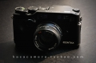

psychowolf2014-08-05 19:504.75 分
操作性 4.50功能性 5.00美观性 5.00趣味性 4.50耐用性 4.50性价比 5.00

muxiaoshi2013-10-07 12:504.08 分
操作性 3.50功能性 3.50美观性 5.00趣味性 4.50耐用性 4.00性价比 4.00
yaler2012-11-07 12:583.92 分
操作性 5.00功能性 4.50美观性 4.00趣味性 3.50耐用性 3.00性价比 3.50
y-tong2012-06-06 09:125 分
操作性 5.00功能性 5.00美观性 5.00趣味性 5.00耐用性 5.00性价比 5.00
zikoer2011-07-05 15:445 分
操作性 5.00功能性 5.00美观性 5.00趣味性 5.00耐用性 5.00性价比 5.00
lzhjinny2011-03-31 09:224.75 分
操作性 4.50功能性 5.00美观性 5.00趣味性 5.00耐用性 4.50性价比 4.50
william2011-03-11 22:414.83 分
操作性 5.00功能性 5.00美观性 5.00趣味性 5.00耐用性 4.50性价比 4.50
因非子2010-11-09 16:094.25 分
操作性 5.00功能性 4.50美观性 3.50趣味性 3.50耐用性 4.00性价比 5.00
熊转悠注意2010-11-05 18:254.83 分
操作性 5.00功能性 5.00美观性 5.00趣味性 5.00耐用性 4.00性价比 5.00
人醉沙场2010-04-17 04:384.58 分
操作性 4.50功能性 4.50美观性 5.00趣味性 5.00耐用性 4.00性价比 4.50
最后手动2010-04-13 19:164.67 分
操作性 5.00功能性 5.00美观性 5.00趣味性 4.50耐用性 4.50性价比 4.00
yaler2010-04-07 13:21
films01142010-01-03 15:455 分
操作性 5.00功能性 5.00美观性 5.00趣味性 5.00耐用性 5.00性价比 5.00
liederdichter2009-10-19 09:165 分
操作性 5.00功能性 5.00美观性 5.00趣味性 5.00耐用性 5.00性价比 5.00
Ivanzhong2009-07-22 13:374.92 分
操作性 5.00功能性 5.00美观性 5.00趣味性 5.00耐用性 4.50性价比 5.00
pentaxLX2009-07-21 20:504.75 分
操作性 4.50功能性 5.00美观性 5.00趣味性 5.00耐用性 4.50性价比 4.50
老刺猬2009-06-29 02:084.58 分
操作性 5.00功能性 5.00美观性 4.00趣味性 4.50耐用性 4.00性价比 5.00
总是一个人行走在江湖2009-05-24 00:334.83 分
操作性 5.00功能性 5.00美观性 5.00趣味性 5.00耐用性 4.50性价比 4.50
buzzlee2009-04-01 20:334.92 分
操作性 5.00功能性 5.00美观性 4.50趣味性 5.00耐用性 5.00性价比 5.00
someday20462009-02-09 12:054.83 分
操作性 5.00功能性 5.00美观性 5.00趣味性 5.00耐用性 4.50性价比 4.50
杨排长2008-08-28 16:184.75 分
操作性 4.50功能性 5.00美观性 5.00趣味性 4.50耐用性 4.50性价比 5.00
秋后的蚂蚱2008-05-27 00:224.42 分
操作性 4.50功能性 5.00美观性 4.50趣味性 4.00耐用性 3.50性价比 5.00
秋后的蚂蚱2008-05-27 00:17
gloomy2008-05-12 16:324.17 分
操作性 4.00功能性 4.50美观性 4.00趣味性 4.00耐用性 3.50性价比 5.00
WolfPhilip2007-07-14 13:564.67 分
操作性 5.00功能性 5.00美观性 4.50趣味性 4.50耐用性 4.50性价比 4.50
WolfPhilip2007-07-14 13:55
ych2007-07-04 17:484 分
操作性 4.00功能性 4.50美观性 5.00趣味性 4.00耐用性 4.00性价比 2.50
老土豆2007-04-22 08:594.5 分
操作性 4.00功能性 5.00美观性 4.50趣味性 4.00耐用性 5.00性价比 4.50
rice242007-02-27 11:014.75 分
操作性 4.50功能性 4.50美观性 5.00趣味性 5.00耐用性 5.00性价比 4.50
ligg2007-01-16 13:442.42 分
操作性 3.00功能性 3.00美观性 4.00趣味性 2.50耐用性 1.00性价比 1.00
macg4tt2006-12-08 18:283.5 分
操作性 4.50功能性 4.50美观性 3.50趣味性 3.50耐用性 2.50性价比 2.50
Luft2006-07-20 15:584.25 分
操作性 4.50功能性 3.50美观性 5.00趣味性 4.00耐用性 4.00性价比 4.50
子曦2006-06-26 12:404.42 分
操作性 4.50功能性 4.50美观性 4.50趣味性 4.00耐用性 4.50性价比 4.50
国仁2006-01-26 22:464.5 分
操作性 4.50功能性 4.50美观性 4.50趣味性 4.50耐用性 4.50性价比 4.50
熊转悠注意2006-01-26 20:54
gaoderong2006-01-05 19:194.83 分
操作性 4.00功能性 5.00美观性 5.00趣味性 5.00耐用性 5.00性价比 5.00
power722005-12-12 18:103.75 分
操作性 4.50功能性 4.50美观性 3.00趣味性 3.00耐用性 3.00性价比 4.50
狂徒2005-11-23 00:264.17 分
操作性 4.00功能性 4.00美观性 5.00趣味性 3.00耐用性 5.00性价比 4.00
第壹千个胶卷2005-11-02 14:224.67 分
操作性 4.50功能性 5.00美观性 5.00趣味性 4.00耐用性 4.50性价比 5.00
蚂蚁liding2005-08-13 13:304.83 分
操作性 5.00功能性 5.00美观性 5.00趣味性 5.00耐用性 5.00性价比 4.00
himmel2005-08-13 00:274.58 分
操作性 5.00功能性 4.00美观性 5.00趣味性 4.00耐用性 4.50性价比 5.00
douban2005-08-09 22:304.17 分
操作性 5.00功能性 4.50美观性 4.00趣味性 4.00耐用性 4.00性价比 3.50
驴游天下2005-07-05 18:154.33 分
操作性 4.00功能性 4.00美观性 5.00趣味性 4.50耐用性 4.50性价比 4.00
你知道我无法后退2005-06-28 21:044.5 分
操作性 4.50功能性 4.50美观性 4.50趣味性 5.00耐用性 4.00性价比 4.50
长乐2005-06-17 00:394.33 分
操作性 4.50功能性 4.00美观性 5.00趣味性 4.00耐用性 4.50性价比 4.00
冷眼看大千世界2005-06-01 09:113.33 分
操作性 2.50功能性 3.00美观性 5.00趣味性 2.00耐用性 4.00性价比 3.50
YADING2005-04-22 18:30
子非鱼2005-04-04 20:453.67 分
操作性 3.00功能性 2.00美观性 5.00趣味性 4.00耐用性 4.00性价比 4.00
佳友2005-04-01 13:004.67 分
操作性 4.50功能性 5.00美观性 5.00趣味性 4.50耐用性 4.50性价比 4.50
子非鱼2005-02-02 15:00
秋天的冰2002-04-30 10:394.58 分
操作性 4.50功能性 4.50美观性 5.00趣味性 5.00耐用性 4.50性价比 4.00
郁郁2002-04-16 19:154.58 分
操作性 4.50功能性 4.50美观性 5.00趣味性 4.50耐用性 4.00性价比 5.00
上官丰2002-04-16 09:294.83 分
操作性 4.50功能性 5.00美观性 5.00趣味性 5.00耐用性 4.50性价比 5.00
宁采臣2002-04-15 19:04
c332002-04-15 17:134.75 分
操作性 4.50功能性 4.50美观性 5.00趣味性 5.00耐用性 5.00性价比 4.50
qinwang5192002-04-12 10:004.75 分
操作性 4.50功能性 4.50美观性 5.00趣味性 5.00耐用性 4.50性价比 5.00
james-su2002-04-11 18:094.92 分
操作性 5.00功能性 4.50美观性 5.00趣味性 5.00耐用性 5.00性价比 5.00
fsliush2002-04-10 22:514.67 分
操作性 5.00功能性 5.00美观性 4.50趣味性 4.50耐用性 5.00性价比 4.00
图腾2002-04-10 19:284.83 分
操作性 4.50功能性 4.50美观性 5.00趣味性 5.00耐用性 5.00性价比 5.00
curtner2002-04-09 23:464.5 分
操作性 4.50功能性 4.50美观性 4.50趣味性 4.50耐用性 4.50性价比 4.50